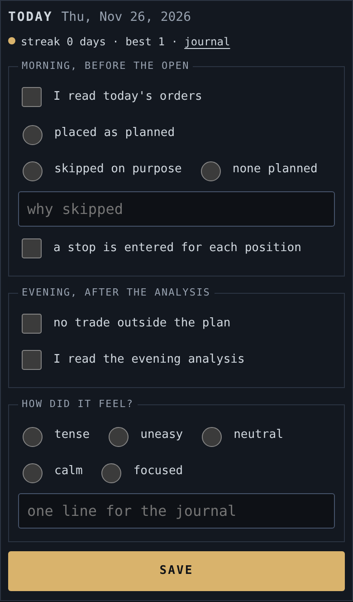
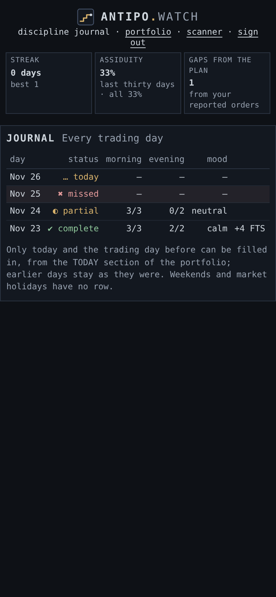
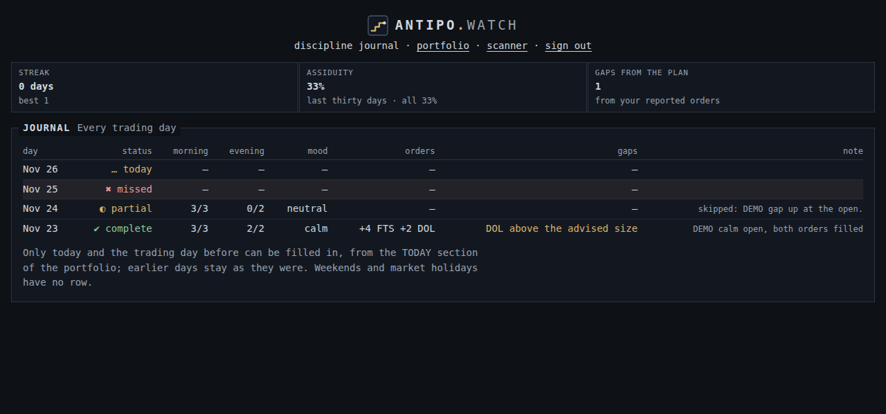

Loop 014 — Discipline mode
2026-11-22 · A TODAY checklist at the top of the private portfolio, and a journal with one row for every trading day, missed days included. Version 0.17.0.
Why
Maybe a discipline mode: every day we come and check, we tick boxes. I would like a trading discipline. A TODAY section with the boxes to tick, all of it sent to a log, a really clean log, a table with the whole history. All the discipline, day by day, and the days we were not diligent.
The owner's words, reworded in English.
What changed



The screenshots use example days marked DEMO, from a local server; no real orders.
- The checklist: morning — read the orders; placed, skipped on purpose with a reason, or none planned; a stop entered for each position. Evening — no trade outside the plan; read the evening analysis. A mood, a note, one save button; it works without JavaScript.
- An honest journal: every trading day has a row; a day that ends with nothing saved stays missed. Only today and the trading day before can be filled in.
- Gaps by code: an order outside the plan or above the advised size is found from the ledger of real orders, never typed.
- On the server only, behind the login; the evening run reads the day's status and mentions it in one line.
Checks
| Check | Result | Evidence |
|---|---|---|
| Unit and browser tests | passed | 204 and 19; streaks and assiduity matched to counts by hand. |
| CI and CodeQL | passed | Green on the release commit. |
| Live after deploy | passed | Version 0.17.0 answers; the new pages ask for the login; 50 stocks and their signals reloaded. |
| The owner's first save on the live site | not run | Monday Nov 23. |
| The evening run reading the checklist | not run | Monday Nov 23. |